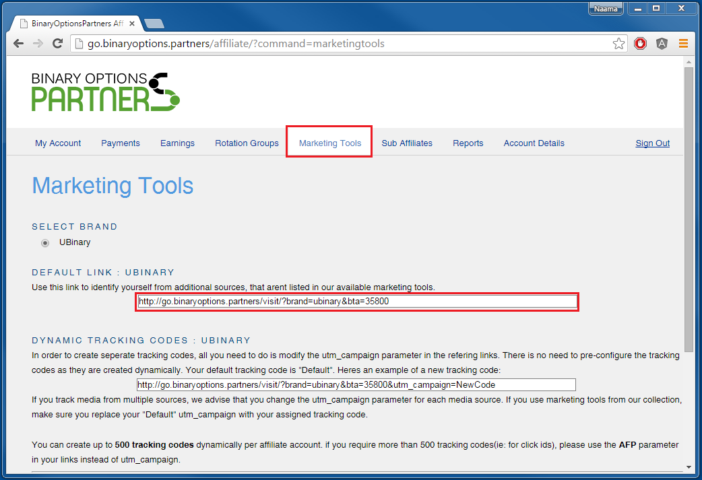
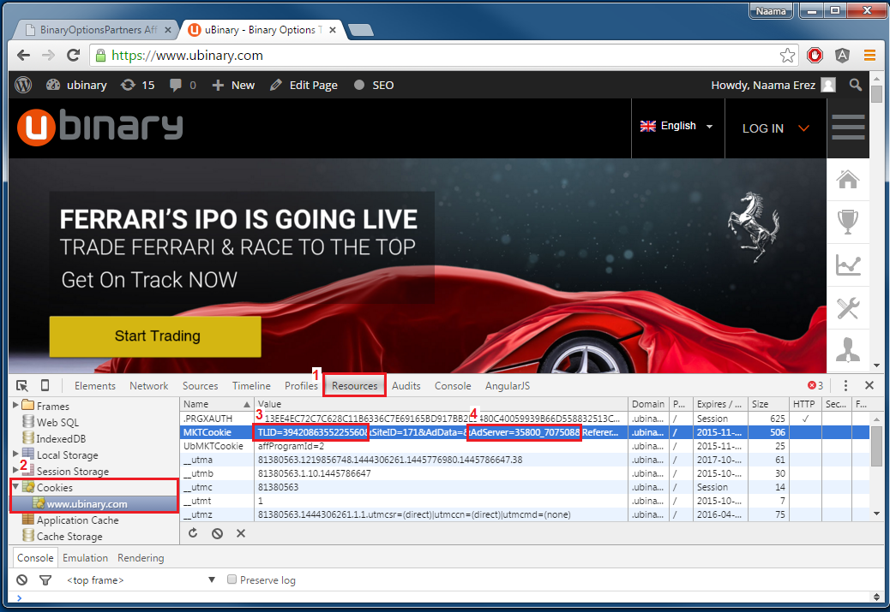

| 1. On the affiliate's page on Cellxpert, Go to "Marketing Tools" and copy the link under "DEFAULT LINK : UBINARY" |  |
| 2. Paste the link in the browser. It will take you to the HomePage. | |
| 3. Click the "F12" key to open the browser's "Development Tools" and go to the "Resources" tab (1). |  |
| 4. On the left side menu select "Cookies" and under it select the uBinary cookie (2). | |
| 5. Inside the MKTCookie search for TLID (3) and AdServer (4). Insert the AdServer parameter in the cTag field. |